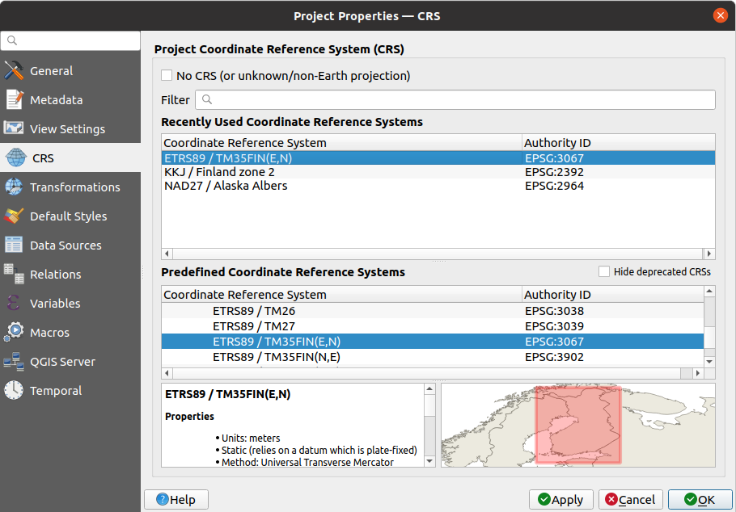
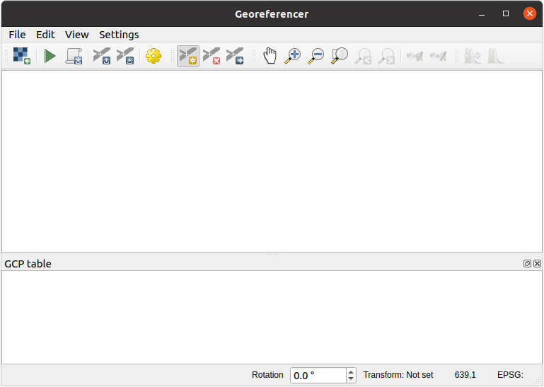

重要
翻訳は あなたが参加できる コミュニティの取り組みです。このページは現在 100.00% 翻訳されています。
14.2. レッスン: 地図をジオリファレンスする
林業においてよくある作業は、森林地域についての情報の更新でしょう。ある地域についての前回の情報が何年も前のもので、アナログで（つまり紙で）集められていたり、デジタイズされたが残っているのはその目録データの紙版しかなかったり、といったことがあり得ます。
その情報を、例えば後の目録と比較するために、GISで使用したいと思うことはよくあります。これは、GISソフトウェアを使って手元の情報をデジタイズする必要があることを意味します。しかしデジタイズを始める前に、紙の地図をスキャンしジオリファレンスするという重要な最初のステップがあります。
このレッスンの目標： QGISでジオリファレンスサツールを使用する方法を学ぶ。
14.2.1. ★☆☆ （初級レベル） 地図をスキャンする
最初にしなければならない仕事は、地図をスキャンすることです。地図が大きすぎる場合は、分割してスキャンできますが、各部分について前処理とジオリファレンスの作業を繰り返す必要があることに留意してください。ですから、可能な限り少ない分割で地図をスキャンします。
このマニュアルで提供されるものと異なる地図を使用する場合は、ご自分のスキャナを使い、300 DPIの解像度で地図を画像ファイルとしてスキャンしてください。地図が色付きの場合は、カラーで画像をスキャンし、後でそれらの色を使用して地図からの情報を別々のレイヤ（例えば、林分、等高線、道路...）に分離できるようにしておきます。
この演習では、以前にスキャンした地図を使用します。この地図はデータフォルダ exercise_data/forestry に rautjarvi_map.tif として格納されています
14.2.2. ★☆☆ （初級レベル） 理解しよう: スキャンした地図をジオリファレンスする
QGISを開き、 で、プロジェクトのCRSを
EPSG:3067 - ETRS89 / TM35FIN(E,N)に設定します。これは現在フィンランドで使用されているCRSです。 QGISプロジェクトを
map_digitizing.qgsとして保存します。
QGISのジオリファレンスツールである ジオリファレンサ を使用します。地図をジオリファレンスするには:
 でジオリファレンスツールを開きます。
でジオリファレンスツールを開きます。 地図画像ファイル、
rautjarvi_map.tifをジオリファレンスする画像として追加します: 。OK をクリックします。
次に地図をジオリファレンスするための変換設定を定義する必要があります:
を開きます。
変換型 を
線形に、 リサンプリング方法 を最近傍に設定します。変換先CRS オプションの隣にある
 CRSを選択 ボタンを押し、
CRSを選択 ボタンを押し、 EPSG:2392 - KKJ / Finland zone 2CRS を選択します。これはこの地図が作られた1994年当時のフィンランドで使われていたCRSです。出力ファイル ボックスの横にあるアイコンをクリックし、フォルダに移動して
exercise_data\forestry\digitizingフォルダを作成し、ファイル名をrautjarvi_georef.tifにします。 完了後にプロジェクトに読み込む をチェックします
完了後にプロジェクトに読み込む をチェックします残りのパラメータはデフォルトのままにします。

OK をクリックします。
この地図にいくつかある、座標を示す十字線を使って画像をジオリファレンスします。QGISで通常行うズームやパンのツールを使って、ジオリファレンサ・ウインドウに表示された画像を確認することができます。
地図の左下隅に拡大して、前述したように
KKJ / Finland zone 2CRSによるXとYの座標ペアを持つ十字線があることに注意してください。この点は地図のジオリファレンスに使用する最初の地上基準点（グランドコントロールポイント）として使用します。点を追加 ツールを選択し、（必要に応じてパンとズームして）十字線の交点をクリックします。
地図座標の入力 ダイアログに、地図上に表示される座標（X: 2557000, Y: 6786000）と、そのCRS（
EPSG:2392 - KKJ / Finland zone 2）を記入します
OK をクリックします。
ジオリファレンスのための最初の座標の準備ができました。
画像内の他の黒い十字線を探します。それらは北と東の方向にお互いに1000メートル離れています。これらの点の座標は、最初の点との関係で計算できるでしょう。
画像を縮小して、他の十字線を見つけるまで右か上に移動し、何キロメートル移動したか推定してください。地上基準点はお互いにできるだけ離すようにしてください。
少なくともあと3つの地上基準点を、最初のものと同じ方法でデジタイズします。次のようなものが出来上がるはずです:

すでに3つのデジタイズした地上基準点では、ジオリファレンスエラーを点から出る赤い線として見ることができます。ピクセル単位の誤差は、 GCP テーブル の dX (ピクセル) と dY (ピクセル) 列にも見ることができます。ピクセル単位の誤差が10ピクセルより大きくなってはいけません。もしそうであれば、デジタイズした点と入力した座標を見直して、何が問題なのかを探す必要があります。上の画像を参考にするとよいでしょう。
基準点が決まったら、後で使用するために保存しておきます:
に移動します。
フォルダ
exercise_data\forestry\digitizingで、ファイルの名前をrautjarvi_map.tif.pointsにします。
最期に地図をジオリファレンスします:
に進みます。
ジオリファレンスの設定を編集したときに、ファイル名を
rautjarvi_georef.tifにしたことに注意してください。これでQGISプロジェクトにジオリファレンスされたラスタとして地図が表示されました。ラスタが少し回転しているように見えますが、これは単にデータが
KKJ / Finland zone 2で、プロジェクトがETRS89 / TM35FIN(E,N)であるためです。データが正しくジオリファレンスされているかどうかを確認するには、以下の方法があります
exercise_data\forestryフォルダにある、rautjarvi_aerial.tifという名前の航空写真を開きます。あなたの地図とこの画像は良く合うはずです: 地図の透明度を50%に設定し、航空写真と比較してみてください。

QGISプロジェクトへの変更を保存してください。次のレッスンはこの時点から続きます。
14.2.3. 結論
これで紙地図をジオリファレンスし、QGISで地図レイヤとして利用できるようになりました。
14.2.4. 次は?
次のレッスンでは、地図上の林分をポリゴンとしてデジタイズし、目録データを追加します。